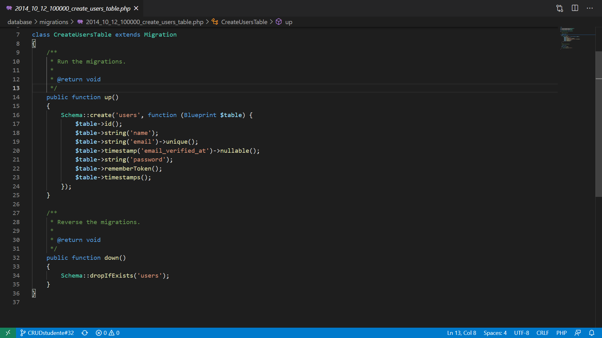

Migrazioni
Introduzione
Con migrazione si intende un costrutto particolare di Laravel (e di altri Web Framework similari) necessario per applicare modifiche strutturali al database in maniera sicura.
Dato che la struttura del database non è legata direttamente al codice sorgente di un progetto Laravel, è necessario utilizzare un sistema per garantire che le modifiche strutturali alle tabelle vengano propagate correttamente tra tutti i vari utenti che lavorano sul progetto.
Possiamo considerare le migrazioni, quindi, come un sistema di versionamento del database dell'applicazione.
Usare le migrazioni significa garantire che ogni contributor del progetto abbia la stessa struttura del database senza dover manualmente intervenire per rettificare o correggere eventuali differenze.
Un altro aspetto di fondamentale importanza delle migrazioni è rappresentato dal fatto che ogni migrazioni deve essere eseguita una sola volta.
Una volta eseguita una migrazione senza errori, infatti, il suo risultato viene salvato a database, in modo che, richiamando nuovamente il comando di migrazione, quella stessa azione non venga ripetuta.
Creare una migrazione
Per creare una migrazione è necessario utilizzare il seguente comando Artisan sul terminale:
php artisan make:migration create_table_names_table
N.B. Per convenzione il nome delle migrazioni dovrà attenersi ad alcune regole:
- Tutte le lettere minuscole
- Le parole devono essere separate da _
- Nome della tabella plurale
Laravel è in grado di indovinare le intenzioni dello sviluppatore nel momento in cui si crea una migrazione, utilizzando dei semplici accorgimenti.
Se ad esempio si volesse creare una tabella di nome users, il comando
php artisan make:migration create_users_table
Sarebbe in grado di generare il codice sorgente necessario per, appunto, generare una tabella e alcune colonna (id, created_at, updated_at) in maniera automatica.
Una volta creata la migrazione è possibile trovarla all'interno della cartella database/migration insieme a tutte le altre.
Ogni migrazione ha un timestamp (visibile come prefisso del nome del file, nella forma) che permette a Laravel di individuare l'ordine cronologico delle migrazioni.
Una volta aperto il file dovrebbe presentarsi una schermata simile:

All'interno delle migrazioni troveremo due metodi:
-
up()In questo metodo vengono inserite tutte le azioni (creazione o cancellazione di tabelle, colonne, indici, modifiche di colonne) che verranno eseguite dal comando
migrate -
down()In questo metodo vengono inserite tutte le azioni (creazione o cancellazione di tabelle, colonne, indici, modifiche di colonne) che verranno eseguite dal comando
migrate:rollback.Possiamo pensare al metodo
down()come ad un Ctrl-Z delle migrazioni, ovvero tutte le azioni necessarie ad annullare gli effetti del corrispondente metodoup().
Principali comandi Artisan sulle Migrazioni
-
php artisan migrate:
Serve ad eseguire tutte le migrazione non ancora effettuate (quindi non ancora presenti a database) nell'ordine definito dai timestamp associati a ciascuna migrazione.
-
php artisan migrate:rollback:
Serve ad annullare le modifiche effettuate dall'ultimo gruppo di migrazioni eseguire, richiamando la funzione
down()di ciascuna migrazione. -
php artisan migrate:fresh:
Serve ad inizializzare il database, eseguendo nuovamente le migrazioni, su un database svuotato di ogni tabella
-
php artisan migrate:status:
Serve a vedere lo stato delle migrazioni, indicando quelle eseguite (in verde) e quelle da eseguire (in rosso)
Creare una tabella
All'interno di una migrazione e più precisamente all'interno del metodo up() bisognerà andare scrivere il seguente codice:
Schema::create('table_name',function (Blueprint $table) {
// Definizione colonne tabelle
});
Al suo interno dovremo andare a specificare che tipo di colonne vogliamo andare a creare all'interno della tabella, per esempio con:
$table->string('email')->unique()
andremo a creare una colonna chiamata email che sarà di tipo VARCHAR(255).
Abbiamo inoltre specificato che all'interno della tabella quel campo dovra essere unico.
Se invece scriviamo:
$table->boolean('corretto')->default(false)
avremo una colonna di tipo boolean chiamata corretto che di dafault avrà un valore false.
Tipi di Colonne
Le colonne di una tabella possono essere di diverso tipo:
-
$table->string('colonna', 255)Permette di creare una colonna di tipo
VARCHAR, impostando il numero massimo di caratteri (in questo caso 255) -
$table->boolean('colonna', default)Permette di creare una colonna di tipo
TINYINT(su MySQL), corrispondente ad un valore booleano (true/false in PHP).
E' possibile impostare un valore booleano predefinto all'interno didefault. -
$table->integer('colonna', MAX_DIGITS)->unsigned()Permette di creare una colonna di tipo
INT(su MySQL), impostando il numero massimo di cifre (MAX_DIGITS).
E' possibile inoltre impostare la colonna comeUNSIGNED(utile per le chiavi di valore).Da Laravel 6 in poi, l'ID di ogni tabella in MySQL viene codificato usando un
bigInteger, invece dell'integernormale.
E' importante, dunque, nelle foreign key usare il nuovo valore delle colonna come riferimento. -
$table->text('colonna')Permette di creare una colonna di tipo
TEXT(su MySQL), quindi con una dimensione prefissata, utile per testi lunghi. -
date, datetime & timestamp TODO
-
timestamps & softdeletes TODO